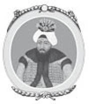
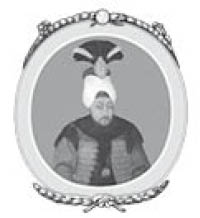
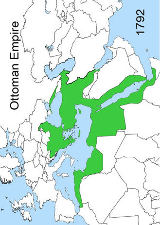

XVI : KAYNARCA ANTLAŞMASI
1739-1774

III. Osman
Belgrad Antlaşması ve seferler Osmanlı’nın uzun yıllar küçülmesini durdurdu ve barış devri geçirdiler. Söz konusu barış dönemi sadece Osmanlı hükümdarlığının güttüğü bir politika değildi, Türkiye’yi parçalamak isteyen Avrupa’nın iki büyük gücü Rusya ve Avusturya’nın bu amaç uğruna harekete geçecek durumları olmamasıydı. 1740 yılında İmparator VI. Charles öldü. İmparatorun bırakmış olduğu miras yüzünden komşu ülkelerde karışlık meydana geldi. Avusturya ile peş peşe girilen savaşlar 1748’de Aix-la-Chapelle (Ekslaşapel) Antlaşması’yla son buldu. Antlaşmanın devamında tekrardan savaşlar oldu, Yedi Yıl Savaşları olarak bilinen mücadeleler 1763 yılında son buldu. Osmanlı İmparatorluğu bu savaşlardan hiç birine katılmadı. Avusturya’nın toparlanmaya çalıştığı dönemde Osmanlı’nın Macaristan’a saldırmaması, imparatorluğun yararına oldu. 1768 yılında Rusya ile bir savaş patlak verene kadar tamamen barış vardı.
1754 yılında Sultan Mahmud öldü ve yerine kardeşi III. Osman geçti, o da sadece üç yıl hükümdarlık yaptı. Yıpranmış bir vücudu ve kamburu vardı. Hükümetinin yurt dışında sürdürdüğü politikada bir değişiklik yapabilecek gibi görünmüyordu. Üç yıllık hükümdarlığı zamanında tam altı adet veziriazam değiştirildi. Bu durumda imparatorluğun esas yönetiminin haremin kapalı kapıları ardından Kızlarağası Beşir’in yerine geçen kişi tarafından sürdürüldüğü söylenebilir.
III. Mustafa elli yaşında kardeşinin yerine geçti. Elli yaşına kadar bütün hayatını Harem dairesinde tutuklu olarak geçirdi. Ülke politikasından tamamen habersiz olarak hayatını sürdürdü. Hükümdarlığının ilk altı yılı ülke yönetimini Veziriazam’ı Ragıp Paşa’nın ellerine bıraktı. Mahmud’un hükümdarlığı döneminde değişen bir çok Veziriazam’dan en son kalandı Ragıp Paşa. Ragıp Paşa aynı Sokullu ve Köprülü gibi çok zeki bir devlet adamıydı, onlar gibi kendiside barış politikası taraftarıydı.

III. Mustafa
1763 yılında Ragıp Paşa öldükten sonra Sultan Mustafa ülke yönetimini kendi ellerine aldı. Devlet görevlerini yerine getirmek isteyen iyi niyetli bir adamdı; ancak sabırsız, telaşlı ve kuvvetsizdi. Bir hükümdarın imtiyazlarını kullanarak en beceriksiz komutanları ve yöneticileri seçti. Barış politikasından vazgeçerek kendini savaşın ortasına attı böylece imparatorluğuna en talihsiz durumları yaşattı. Rusya’nın başında II. Katherine ve Prusya’nın başında ise Frederick bulunmaktaydı, Osmanlı’nın iki güçlü komşusuydu ve Mustafa’nın talihsizliği ise iki devletin de son derece yetenekli ve acımasız olmasıydı.
İmparatoriçe Katherine 1762 yılında büyük bir güçle ayaklanmada kaybettiği eşinin yerine ülkenin başına geçti. Onun döneminde Rusya, Polonya ve Türkiye’ye doğru genişlemek istiyordu. Frederick ise daha önce Rusya’nın gidişatını kontrol altına almak için Osmanlı ile yaptığı anlaşmaya sırtını dönmüştü. 1764 yılında Rusya imparatoriçesiyle bir antlaşma yaptı, buna göre karşılıklı olarak sahip oldukları topraklar garanti altına alındı ve ikisinin de toprakları istila edilirse birbirlerine yardım etmek için söz verdiler.
Ancak eğer Fransa Prusya’ya ya da Türkiye Rusya’ya saldıracak olursa bu yardım parasal anlamda olacaktı. Bundan kısa bir süre sonra iki güç Polonya’yı parçalayarak paylaşma kararı aldı. Avusturya İmparatoriçesi Maria Theresa da hiç istemeden bu antlaşmanın bir parçası oldu. Osmanlı ise Polonya üzerine komplo kuran üç güce karşı geldi. Polonya’nın Rusya ve Prusya orduları tarafından işgal edilmesine nafile bir çabayla karşı koymaya çalıştı; ancak Polonya’nın ilk parçalanışı meydana geldi. Rusya savaşı önlemek için hiçbir şey yapmadı. Tam tersine Türkleri savaşın ortasına çekmek için türlü türlü faaliyetler gerçekleştirdi. Kırım’ı, Mora’yı, Karadağ’ı ve Gürcistan’ı sultana karşı gelmeleri için isyana teşvik etti. Polonyalı mültecileri Kırım hanına ait olan Basarabya sınırından geçirmesiyle ve Balta şehrini yıkmasıyla Türkiye tarafsızlığını bozdu.
1768 yılında İstanbul’da bir dîvân toplantısı meydana geldi. Toplantıda Rusya’nın Polonya’ya uyguladığı politika ile Belgrat Antlaşması’nı bozduğu ileri sürüldü ve ona karşı bir savaşın kaçınılmaz olduğu kararı çıktı. Bu karara bir tek Veziriazam Muhsinzade Mehmed Paşa karşı çıktı. Sadece karşı çıktığını belirtmedi ayrıca orduyu tamamen hazırlamadan savaş ilan etmenin çok aptalca olduğunu da belirtti. Sınırda bulunan kalelerin hazırlıksız olduğunu, Türklerin askerî operasyonunu ancak bir sonraki bahar gerçekleştirilebileceğini söyledi. Ani bir savaş kararı alınırsa Rusya’nın avantajlı durumda olacağını da sözlerine ekledi. Bu önerilerinde son derece haklı olmasına rağmen veziriazam görevden alındı. Onun yerine Mehmed Emin Paşa getirildi ki, olabilecek en yeteneksiz adamdı ve kesinlikle askerî tecrübesi yoktu. Vakitsizce verilen savaş kararından haberdar olan Rusya, daha Türkiye hazırlanıp Moldova’yı savunmak için ordusunu yollamadan 1769 yılında sefere çıktı. İmparatoriçe savaş meydanına üç ayrı ordu yolladı. Prens Galitsin komutasında olan birinci ordu Moldova’yı istila etti ve Khoczim’i kuşattı. Veziriazamın hazırlanarak Babadağlı’da kamp kurup İsmail yakınlarındaki İsakçı’ya ilerlemesi 1769 yılının Mayıs ayına kadar sürdü. Kamp kurduğu bölgede generallerini toplayarak savaş üzerine bir toplantı düzenledi ki şaşırtıcı derecede bu konu hakkında ne kadar yeteneksiz olduğunu kanıtladı. Onlardan ordunun hangi yöne doğru ilerlemesi konusunda akıl danıştı ve şöyle söyledi:
Benim hiç savaş tecrüben olmadı, görkemli Osmanlı hükümdarlığı ve ordusu için ne şekilde bir operasyon yapılmalı buna siz karar vereceksiniz. Tereddüt etmeden konuşun ve yardımlarınızla beni aydınlatınız.
Komutanların karşılaştıkları cehalet ve acizlik karşısında dilleri tutuldu. Sonunda bir tartışma içersine girdiler. Çok farklı düşünceler söz konusuydu. Sonuç olarak Tuna Nehri’nden geçerek Moldova’ya doğru ilerlemeye ve karşılarına çıkan durumlara göre davranmaya karar verildi. Aslına bakılırsa sefer için hazırlanmış kesin bir plan yoktu. Bu karara uygun olarak ordu Tuna Nehri’ni geçti. Daha sonra Prut Nehri’ne doğru ilerlemeye karar verdiler. Yaş ile Khoczim arasında bir yerlere vardılar. Çoktan açlıktan sorun yaşamaya başlamışlardı bile, ki hiçbir hazırlık yapılmamıştı. Tuna ve Prut’a doğru ilerlerken askerler sivrisineklerden nasibini almıştı. Khoczim’i Rusların istilasından kurtarmak imkânsızdı. Düşmanla ciddi bir çarpışma yaşamadan geri çekilmek zorunda kaldılar. Tuna Nehri’ne geri döndüler ve sefer 1769 yılında son buldu.
Rusya ie 1770 yılında çok fazla bir harekat yapamadı. Prens Galitsin de veziriazam gibi yeteneksiz ve ahmaktı. İmparatoriçe onu saraya geri çağırdı ve yerine çok yetenekli olan General Romanzoff’u geçirdi. Sultan da Emin Paşa’yı çağırtarak öldürülmesini emretti.
Bu arada İmparatoriçe Katherine “Doğu Projesi” adı verilen işleriyle meşgul olmaya başladı. Yunanistan’a sultana karşı ayaklanma başlatmak için bir çok casus rahip yolladı. Ayaklanmanın başlayacağını hissettiği noktada da Baltık Denizi’nden Akdeniz’e bir donanma yolladı ve ayaklanmayı destekledi. Donanmada on iki gemi ve on iki fırkateyn ile askeriyeyi destekleyen sayısız araç bulunuyordu. Keşif seferi imparatoriçenin kardeşi ve daha sonra da sevgilisi olan Alexis Orloff tarafından kontrol ediliyordu. Orloff zamanında askerî isyan çıkararak imparatoriçeyi tahta geçirmişti. Orloff’un etkisiyle başa gelmiş olan imparatoriçenin Türklere karşı olan savaşta kendisine yardım etmesini bekliyordu. Donanma çok güçlüydü ve sembolik değildi. İngiliz Amiral Elphinstone tarafından komuta ediliyordu ve kendisine bir çok İngiliz subay yardım ediyordu. Söylenen o ki, her gemide bir adet İngiliz subay yer alıyordu. Bu durum İngiliz hükümetinin bilgisi ve onayı doğrultusunda gerçekleşmişti, daha önce de Rusya’nın genişlemesine yardım etmişlerdi. Donanma 1769 yılında Kronstadt’tan yola çıktı ve 1770 Şubat ayında Mora kıyılarına kadar geldi. Burada bir çok isyancı Yunan (Mairotes) tarafından karşılandılar, böylece Rus orduları karaya ayak bastı. İsyancılar bölgedeki Türk evlerine çok acımasız davrandı ve hain bir suç işledi.
Eski veziriazam, o zamanın Mora Valisi Muhsinzade Paşa çok büyük gayret gösterdi. Arnavutluk’tan yardım alarak isyancı Yunanları ve on beş bin kişilik Rus ordusunu yenmeyi başardı. Ruslar gemilerine geri dönmek zorunda kaldı. Kıyıda kalan Yunanlar ise daha önce kendilerinin çevre sakinlerine yaptığı gibi büyük bir kıyımdan geçti. Bütün bölge Arnavutlar tarafından katledildi. Modon ve Coron’u almak için başarısız demelerde bulunan Ruslar uzaklara yelken açtı. Sakız Adası’nın yakınlarında sayıca azınlıkta olan ve gemileri de küçük olan Osmanlı ordusuyla karşılaştı. 7 Temmuz 1770 yılında Türkler ile bir deniz savaşı meydana geldi ve Türkler kötü durumda kaldı. Daha önce korsanlık yapan kaptan Cezayirli Hasan’ın cesareti olmasaydı yenilgi çok daha şiddetli olacaktı. Kendi gemisini Rus amiralininkine yaklaştırıp her şeyi göze alarak iki gemi de havaya uçana kadar savaştı. Yenilgiye uğrayan filo Amiral Elphinstone tarafından ablukaya alınan küçük Çeşme limanına sığındı. İngiliz idareci Türk donanmasını yenmek için bir plan yaptı. Teğmen Dugdale Türklere karşı bir kundak gemisine kaptanlık yapmak için gönüllü oldu. Türk filosuna yaklaşmadan Rus denizciler gemiyi boşalttı ve Dugdale tek başına kaldı. Dümeni Türk gemisine doğru çevirip ateş açtı. Alevler bir biri ile yakın duran diğer gemilere de sıçradı ve sadece bir firkateyn hariç Osmanlı’nın bütün filosu yandı ve yok oldu. Deniz savaşı tarihinde bundan daha başarılı ve cesur bir olay yaşanmadı.
III. Selim
Büyük deniz savaşıyla birlikte gemileri patlayan Elphinstone ile Cezayirli Hasan ölümüne kaçtı. Daha sonra Rus ordusunun hiç ertelemeden Çanakkale’ye doğru ilerlemesi oradan Boğazlardan geçerek Marmara Denizi’ne ve son olarak da İstanbul’a girilmesi önerildi. Rusların niyetini anlayan Türklerin Çanakkale Boğazı’nın iki yanına yerleşerek ateş açmaya hazırlanmasından dolayı Orloff tereddüt etti ve seferi erteledi. Bu durum Rusların Boğazlara doğru ilerleme isteğini ertelemesine yetti.
Orloff ile Rus filosu Limni A’dasına doğru ilerledi, karaya ayak basarak orada bulunan kaleyi kuşattılar. Amaçları filoları için Ege Denizi’nde bir merkez oluşturmaktı. Altmış günün sonunda garnizon pes etti ve şartlı olarak Orloff’a teslim oldu. Aynı zamanda Hasan Limni Adası’nı kurtarmak için Osmanlı hükümetini ikna etti. Bu amaç uğruna İstanbul’da dört bin kabadayı topladı. Felaketler doğuracağı için bu duruma itiraz edildiğinde, cevap olarak kazanıp kazanmamanın o kadar önemli olmadığı söylendi. Eğer başarılı olunursa Limni Adası alınmış olacaktı; ancak eğer başarısız olurlarsa İstanbul dört bin ahlaksız adamdan kurtulacaktı. Hasan hiç beklenmedik bir anda Limni’ye gitti ve şartlı anlaşmayı kabul etmeyerek Rusya’ya saldırdı ve yenerek onları tekrardan zorla gemilerine bindirdi. Hasan’ın üstün başarısından sonra Osmanlı donanmasının kaptan paşası oldu. Tekrardan bir filo toparlamayı başardı ve Mondros’ta bulunan Rus filosuna saldırdı. İki filo da zafer ilan etti; ancak en büyük darbeyi Rusya almış olacak ki, sıvışarak bulunduğu denizlerden ayrıldı. Rusya daha sonra Mısır’da Memlukluların başı olan Ali Bey’e yardım ederken ortaya çıktı. Orada Türk paşasına karşı gelerek ayaklanma başlattı ve daha sonra Suriye’yi ele geçirdi. Ancak sonunda Ali Bey kendini zor durum içersinde buldu. Ordusunda kendisine karşı ayaklanma meydana geldi, ayaklanmaya kayınbiraderi teşvik etti. Ali Bey yenilerek öldürüldü ve dört bin Rus da kılıçtan geçirildi. Bu sayede Osmanlı Mısır’daki yerini korumuş oldu.
Orloff’un seferi, deniz savaşlarında, denize ne şekilde hükmedeceğini anlatmak için iyi bir örnek olarak gösterildi. Ayrıca bunun yanında yardımcı bir kara ordusu olmadan karada ki savaşlarda ne kadar beceriksiz olduğu da söylendi. Orloff’un donanması 1773 yılında savaşlar sona erene kadar Akdeniz’de kaldı; ancak hiçbir önemli atak yapamadı.
1770 bahar seferinde Tuna Nehri’ne doğru askerî operasyonları çevirmesi Osmanlı için hiç iyi olmadı. Başa geçen Halil Paşa da kendisinden önceki paşa gibi çok da yetenekli olmadığını kanıtladı. Rusya ordusunun başındaki Romanzoff Moldova’nın tamamını istila etti. Halil otuz bin yetenekli asker ve başıboş Tatar askerleriyle ona karşı geldi. İki ordu Kartal’da karşılaştı, Halil çoktan bölüğünü Ruslara karşı yerleştirmişti, bu arada Tatarlar da Rusların arkasından ülkeyi talan etti ve iletişimlerini kesti. Romanzoff bunun üzerine Türk hattına taarruza geçti. Türkler panikleyerek kaçtı. Kampları, silahları ve depoları Rusların eline geçti. Hayatta kalan Türkler tekrardan Tuna Nehri’nden geçti. 1770 yılında yapılan seferin sonucunda Tuna Nehri’nin kuzeyinde Türklere ait olan bütün kaleler Rusların eline geçti. Veziriazamın ordusu yerle bir oldu. Sadece iki bin asker sağ kaldı.
1771 yılında Türkleri yine bir felaket bekliyordu. Seksen bin kişilik Rus ordusunun ve altmış bin Tatar askerlerinin başında bulunan Prens Dolgorouki Perekop’u ele geçirdikten sonra Kırım’ı istila etti. Bütün bölgeyi ellerine geçirdiler. Eflak ve Moldova da Rusların eline düştü. Khoczim ve Yaş da ele geçirildi. Türklerin yüzüne gülen tek olay Tuna Nehri’ndeki Gurgevo’nun ele geçirilmesi ve Karadeniz kıyısında ki Ochakov ile Kinburn’u başarıyla savunmaları oldu. Ruslar da Kafkaslarda başarılı olarak Türkleri Gürcistan’dan ve Mingrelia’dan attı.
Rusya’nın art arda kazandığı başarılar sebebiyle Avusturya ve Prusya alarma geçti. İkisinin de tek isteği komşularının genişlemesinin bir son bulmasıydı. Bunun ardından hemen Rusya ile görüşmelere başlayarak Osmanlı ile aralarında arabuluculuk yapmasını istedi. Ancak İmparatoriçe Katherine inatla iki güç arasına girmeyi kabul etmedi ve sultana haber yollayarak barış antlaşmasının sadece iki ülke arasında olmasını istediğini belirtti. Böylece sultan, Rusya konusunda yardım isteyen Avusturya’ya Polonya’yı paylaşmayı teklif etti, tabii daha önce Polonya yüzünden Rusya ile savaşa girdiğini unutmuştu. Bu teklif imparator tarafından reddedildi. Yağmalamaya karşı olduğundan değil, Osmanlı’nın bu durumda çok akıllıca bir dost olmayacağını düşündüğü için teklifi reddetti. Bu arada Prusya, Avusturya ve Rusya hangi devletin parçalanması onlar için daha yararlı olur diye tartışma içersindeydi.
1771 yılı seferinin sonunda Rusya ile Osmanlı aralarında ateşkes imzaladı. Bir sonraki yıl ise Bükreş’te barış antlaşmasının şartlarını görüşmekle geçti. Nihayetinde Rusya ültimatom çekti, ılımlı bir yaklaşımla şartları belirlemek istedi, ordusunun kazandığı büyük zaferler ve ele geçirdiği topraklarla egemenliğini genişletti. Sultan, veziriazam ve komutanlar sunulan şartları kabul etme taraftarıydı ancak bütün ulema ve şeyhülislam şiddetle karşı çıktı. Dîvân da kabul etmedi ve savaş yinelendi. Sunulan şartlar iki sene sonraki şartlardan çok farklı olmadığı için şu anda açıklamanın gerekli olmadığını düşünüyorum.
Ateşkes ile birlikte bir yıllığına düşmanlığa ara verildi ve böylece Osmanlı ihtiyacı olan arayı bulmuş oldu. Başka bir sefer için gayretli çalışmalara girildi. 1772 yılının sonunda kendini Mora Adası’nı savunarak gösteren Muhsinzade Paşa tekrardan veziriazam olarak göreve getirildi. Orduya yeni bir coşku getirdi. 1773 baharında Bükreş’te yapılan anlaşmalar sona erince düşmanlıklar tekrardan başladı. Avrupa’ya yapılan bu sefer, Tuna Nehri’nde Silistre ile Ruscuk, Karadeniz’deki Varna şehri ayrıca Balkanlar’ın kuzey sınırlarındaki Schumla kaleleriyle sınırlı kaldı. İki ordu arasında birkaç adet savaş meydana geldi ki, genel olarak Türkler için kötü sonuçlandı. Ancak üç çok önemli kale olan Silistre, Varna ve Schumla Türklerin elinde olduğu için Rusya’nın kazandığı zaferler de pek işe yaramadı.
Bu sefer de Rusya’nın ezici gücüne karşın Türklerin Silistre ve Varna’da yaptığı savunma öne çıktı. Aynı yıl General Romanzoff Silistre yakınlarında Tuna Nehri’ni geçti. Türkleri yenerek onları kaleye doğru geri çekilmeye zorladı, kaleyi çoktan kendi bünyesine almıştı. Romanzoff daha sonra bölgeyi kuşatma altına aldı. Rus ordusu dıştan gelen savunmayı gayretle ve başarıyla durdurdu. Ancak zorluklar daha sonra başladı. Osman Paşa komutasındaki Türkler kahramanca savunma yaptı. Bölgenin bütün erkekleri orduya yardım etti. Sokalar da bile Ruslar ile savaşıldı. Sekiz bin askerini kaybeden Rusya geri çekilmek zorunda kaldı. Daha sonra Romanzoff Korason’da Türklere ağır bir yenilgi yaşattı. Bu olay da Varna’nın yollarını açtı. Ancak yine burada da Türkler muhteşem bir savunma gösterdi, onlara Karadeniz’de bulunan Osmanlı donanması da yardım etti. 1773 seferi böylece son buldu. Sene bitimine doğru Sultan Mustafa öldü, yerine kırk sekiz yıldır inzivada olan kardeşi Abdülhamid geçti. Beklendiği gibi yıllarca hapis hayatı süren Abdülhamid de bulunduğu mevkii için pek uygun değildi. Abdülhamid barış yanlısıydı ve veziriazamlığını sürdüren Muhsinzade Paşa da aynı şekilde barış politikası uygulamak istiyordu.
1774 yılında sefere çıkan veziriazam yirmi beş bin kişilik bir orduyla Schumla’dan yola çıktı. Tuna Nehri’nin yakınlarındaki Hirsova’da bulunan Ruslara saldırma niyetindeydiler. Bölgede bulunan Rus birliklerinin başında Suwarroff vardı. Daha sonra kendinden Rusya’nın en büyük generali olarak söz ettirecekti. Türkler tarafından saldırıya uğramayı beklemiyordu. Hirsova’dan yola çıktı ve Kostlidji’de veziriazamın ordusuyla karşılaştı ve ezici bir zafer kazandı. Türk kampı, bütün silahları ve mühimmatları Rusların eline geçti. Yenilgiye uğrayan ordu dağıldı, veziriazam Schumla’yı sadece sekiz bin askerle savundu. Ruslar Schumla ile başkent arasındaki iletişimi kesmek için bir manevra yaptı. Bunun üzerine Muhsinzade ateşkes ilan etmek için teklifte bulundu. Bu teklif Ruslar tarafından reddedildi; ancak barış antlaşması yapmak için şartları konuşmak istedi. Osmanlı hükümdarlığı adına veziriazam karar aldı ve 16 Temmuz 1774 yılında yedi saat süren görüşmelerin sonunda Kaynarca’da barış antlaşmasının şartları kabul edildi. Şartlar ise iki yıl önce Bükreş Antlaşması’nda Osmanlı’ya sunulan ve tarafından reddedilen şartlarla neredeyse aynıydı. Savaş sırasında Osmanlı bütün bölgelerde çıkan savaşlarda yenik düşmüştü böylece Rusya Avrupa’da Kırım, Eflak, Moldovya ve Basarabya’yı, Gürcistan, Mingrelia ve Kafkasları aldı. Şartlar belirgin bir şekilde makuldü. İmparatoriçe barış için çok istekli olmalıydı. Hükümdarlığının güney bölgesinde çok ciddi isyanlar çıktı. Polonya ile olan ilişkisi onu kaygılandırıyordu. Türkiye’ye karşı kaybettiği savaş çok büyüktü; ancak kazandıkları da bir o kadar fazlaydı. Ellerinin boş olması onun için çok önemliydi. Türklerle antlaşma yapması için bu sebepler yeterliydi.
I. Abdülhamid
Bu antlaşmayla beraber Rusya, Türkiye sınırlarında ele geçirdiği her yeri geri verdi. Ancak Kırım Türklere verilmedi. Kırım ve Basarabya’dan Polonya sınırına kadar olan bölge de Tatarların bağımsızlığı tanındı. Yerli bir prens başa geçti ve seçime Rusya ile Türklerin karışması yasaklandı. O zamandan beri iki devlet de “yeni devletin yurt içi, politik, sivil ve iç işlerine karışmadı.” Ancak Rusya gelecekte genişlemek istiyordu. İmparatoriçe Kerç, Yenikale kalelerini ve Azoff ile Kinburn şehirlerini elinde tuttu. Gelecekte herhangi bir zamanda Rusya’nın Kırım’a girmek için kullanılabileceği yerlerdi. Türklere karşı kaybederek elinden çıkardığı Kırım’ı bir daha ele geçiremedi. Büyük ihtimalle ulemalar Müslüman bölgesinin Hıristiyan güçlerin eline geçmesini kabul edemezlerdi ve eğer Rusya bu konuda ısrarcı olsaydı savaş kaçınılmaz olacaktı. Oczakoff ve diğer taraftan Dnieper ve Kinburn Türklerin elinde kaldı. Ancak Karadeniz kıyılarında bulunan iki Karbartas ki bu bölgede Müslümanlar yaşıyordu, Rusya tarafından alındı. Bu istisnalar dışında savaş sonucu ile Rusların eline geçen Eflak, Moldova, Basarabya, Gürcistan ve Mingrelia gibi Osmanlı toprakları tekrardan sultana verildi. Eflak ve Moldova’da ise halkın Hıristiyan dinini özgürce yaşanması güvence altına alındı, bu şartla bölgeler Osmanlı’ya verildi. İleriki zamanlarda ise bölgede insanî ve cömert bir yönetim hakim oldu. Bu konuda itiraz etme hakkı da İstanbul ve diğer bölgelerde Rus vekillerine verildi.
Antlaşmada yer alan Osmanlı İmparatorluğu için Hıristiyan halktan gelecek tehlikelere karşı diğer cümle de eklendi. Cümle “Görkemli Osmanlı Hükümdarlığı” ile başlayarak şöyle devam etti: “Hıristiyan dinini ve kiliselerini koruyacak, ayrıca Rus vekillerinin onları temsil etme hakkı verilecek”.
Söz konusu koşullar Rusya’ya başka bir Hıristiyan güce bağlı olmayan Hıristiyan halkı koruma hakkı verdi. Ayrıca bu koşullar Rusların kutsal Kudüs şehrine istedikleri zaman rahatça girmelerini sağladı. Rus gemilerine Karadeniz ve Akdeniz’de özgürce dolaşma izni de verildi; ancak Çanakkale ve Boğazlarla ilgili bir ekleme yapılmadı. Savaşın asıl sebebi olan Polonya antlaşma koşullarında yer almadı. Antlaşmaya iki gizli madde daha eklendi, birincisi Osmanlı’nın Rusya’ya üç sene içersinde dört milyon ruble ödeyeceği ve diğer madde ise Rus filosunun Archipelago’dan (Takımadalar) çekilmesi yönündeydi.
Birçok maddesiyle, söz konusu antlaşma tarihçiler arasında Türk İmparatorluğu’nun parçalanmaya başladığı an olarak görülmüştür. Karlofça Antlaşması Macaristan’da yaşayan Hıristiyan halkı Osmanlı hâkimiyetinden kurtarmıştı. Ancak bu antlaşma ilk defa Osmanlı’dan bir Müslüman bölgesini aldı ve Hıristiyan halkı temsil etmesi için Rusya’ya verdi. Bu çok büyük bir değişiklikti, Türkleri aşağıladı ve gelecekte imparatorluğu çok tehlikeli bir iş içine soktu.
Hiç şüphesiz ki, antlaşmanın şartlarını kabul etmesi için veziriazamın Osmanlı İmparatorluğu adına yüksek yetkileri vardı. Ancak antlaşma imzalandıktan hemen sonra geri çağırıldı ve görevden alındı. İstanbul’a doğru yola çıkarken zehirlenerek öldü. Bu fikir büyük ihtimalle sultanın vekilleri tarafından öne sürüldü. Bu denli aşağılayıcı bir antlaşmayı imzalayan Muhsinzade’nin düştükleri bu durumdan mesul olduğunu düşündüler. Antlaşmanın son imzası ise Kaynarca’da bulunan Rus yetkililerine kalmıştı; ancak onlar da Rusya için büyük bir utanç olan Prut Antlaşması’yla tarihlerinin aynı güne gelmemesi için imzayı dört gün erteledi.
